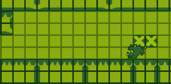
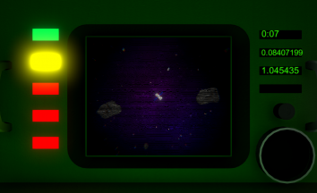
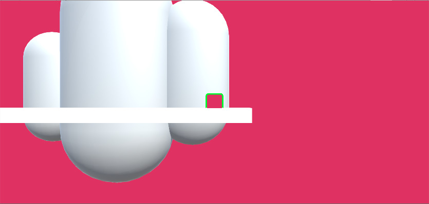
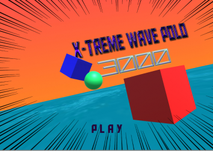
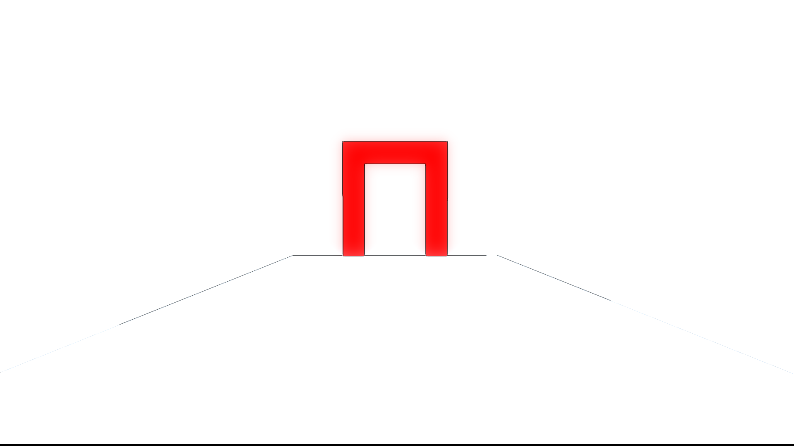
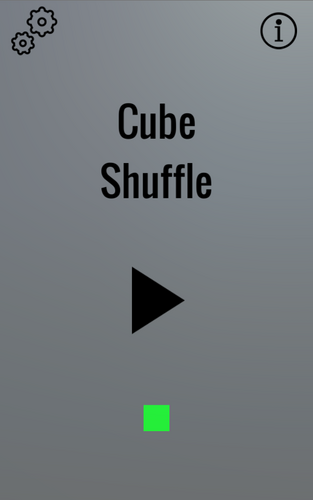

Hello There! Welcome to My Portfolio.
Hi there; my name's Matt and I am an Independent Game Developer. I've been making games for over two and half years now and it is something that I am really passionate about.
Throughout the last two years I've worked on more than a handful of projects, spanning different slew of genres and platforms. I also have experience in both working in a team and also working solo on projects.
I've got experience in both Game Design and Gameplay Programming. I mostly work in Unity3D, as it is the engine I am most confortable with.
Listed below are some of the many games I've worked on over the last few years.
Throughout the last two years I've worked on more than a handful of projects, spanning different slew of genres and platforms. I also have experience in both working in a team and also working solo on projects.
I've got experience in both Game Design and Gameplay Programming. I mostly work in Unity3D, as it is the engine I am most confortable with.
Listed below are some of the many games I've worked on over the last few years.
Experience
AEC - Dawson College - Independent Video Game Design
Graduated from Dawson College's Independent Video Game Design Program, class of 2017
Unity Certified Developer [2017 - 2019]
Completed Unity Developer Certification with a total score 94%.
Certification ID: 201704UCD1920
My Projects

The Great Mousecapade
This was made during MoJam: Montreal Game Jam, which was hosted by OJam. The theme was Truth or Dare. We interpreted this theme by creating a relationship between the two players, requiring them to trust one another and to take chances in order to proceed within the game. By having the Navigator guide the Controller, it allows the Controller to easily avoid obstacles and reach the goal in the most optimal way. This requires the Controller to have a faith in the Navigator's guidance and by working together to get an accurate representation of the area surrounding the player they can easily make their way to the end of the stage. This was the first project 2D project that I worked on and it was a blast. It was also the first time I handled a good portion of the Art in a project, I did all the enviromental art (tiles, background, objects)

Houston, We are the problem!
Houston, We Are the Problem! is the game I worked on for the Global Game Jam 2018. The theme for the game jam was "Transmission", so we interpretted this by making a game about controlling a satellite as it makes it journey further from earth. You must control the satellite to ensure that it avoids an untimely end to the dangerous obstacles throughout space; however the further you go from Earth, the longer the transmission time gets for your inputs to the satellite. I was moderately satisfied with the final product, we spent a good portion of our time trying out ideas until we finally settled on this one, and with the little time we had to implement everything it turned out okay.

Guardians and Golems
Guardians and Golems is 4 Player asymmetric arena battler.
I worked on it as my final semester project during Dawson College's Independent Video Game Design Program; I wore many hats during the development of this prototype, however I mostly focused on Programming and Game Design
The goal we had when creating the project was to make something unique when compared to other arena battler games on the market. We decided on creating team based asymmetric gameplay that consisted of having each player on each team fulfill a seperate roll. One player on each team controlled a Golem, a melee focused brawler that used his abilities to defeat the enemy Golem. The other player controlled the Guardian; a omniscient being that interacted by taking control of conduit scattered thoroughout the map, by working together to take control of a conduit, the Guardian was able to unleash powerful abilities to aid his Golem in combat.
You can download it for Windows following the button below.

Cubic Conundrum
I worked on Cubic Conundrum all by myself during the summer of 2016; this was the first time I worked on a larger scale project and also one in which I had to fill all the roles during development.
The goal I had in mind while creating Cubic Conundrum was that I wanted to make a game that anyone could pick up and play and that also appealed to a large audience.
I showed off the prototype at two different gaming events: The Montreal International Games Summit 2016 and The Montreal Independent Games Festival 2016.
I got a large amount of positive feedback, however I decided to suspend developement until a later date to when I had gathered more knowledge and experience in the industry.
You can play it in your browser by following the button below.

XTREME WAVE POLO 3000
XTREME WAVE POLO 3000 is the game I made for the 2017 Global Game Jam. The theme of the Jam was "Waves"
XTREME WAVE POLO 3000 has players clash against one another in hybrid form of wave polo in which players must use the waves they create to propel the ball into their opponents goal!
I worked on this together with a couple of friends from school and I am pretty happy on how it turned out.
It was my first time working on something multiplayer and I learned alot on how to setup player lobbies and balance mechanics with multiple players in mind.

Innermind
Innermind is a game I made during the Dawson 2016 GameJam.
Innermind has players explore a abstract world by traveling through portals to find the exit.
With Innermind I wanted to make something abstract and visual but also simple; so I ultimately decided on making a first person puzzle game that utilized portals as it's main mechanic as it was something that was easily possible in the limited time frame. (12 Hours)
You play it in browser by following the link below!

Cube Shuffle
Cube Shuffle is the game I made during my first Game Jam.
The rules of the jam we're simple: You had to make a game that contained fewer than 5 assets and mechanics.
I decided to use this opportunity to make my first mobile game; so I stuck with an extremely simple design that allowed me to complete it realitively quickly.
You play it in browser by following the link below!
Contact
Thanks for reading; If you're interested in working together, feel free get in contact with me through email: MatthewFerreira514@gmail.com.